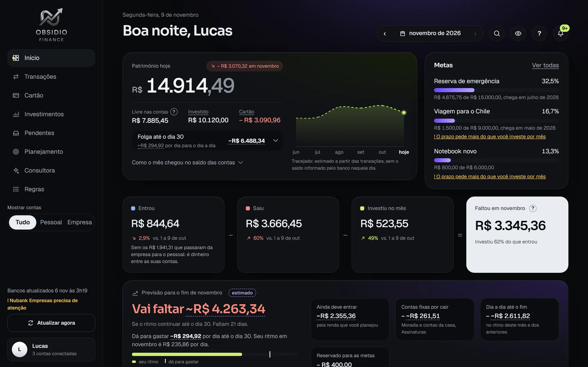
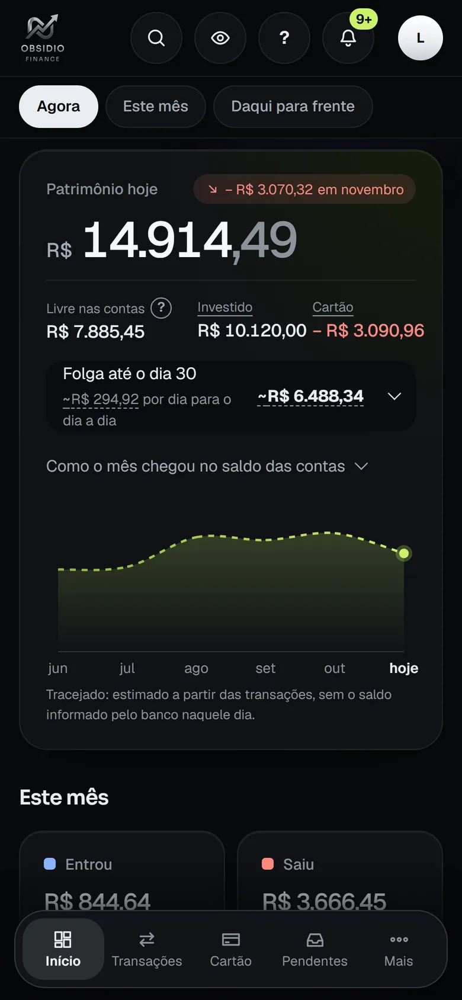
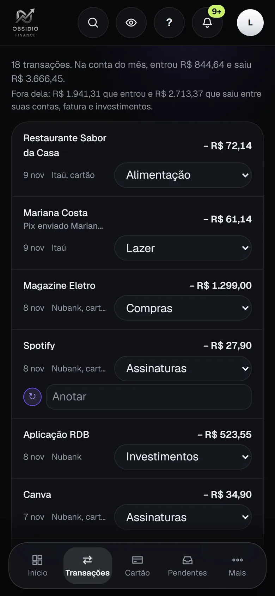
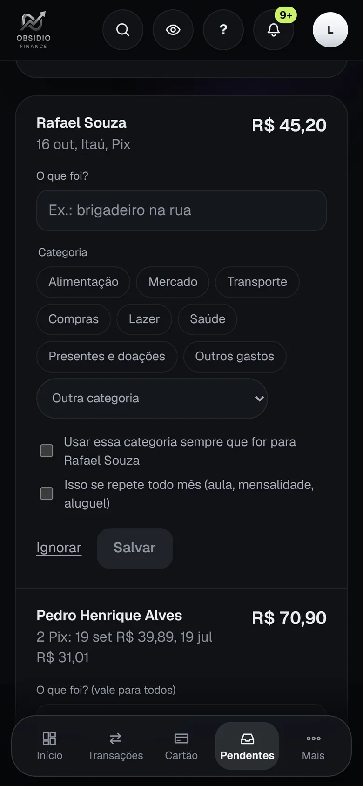
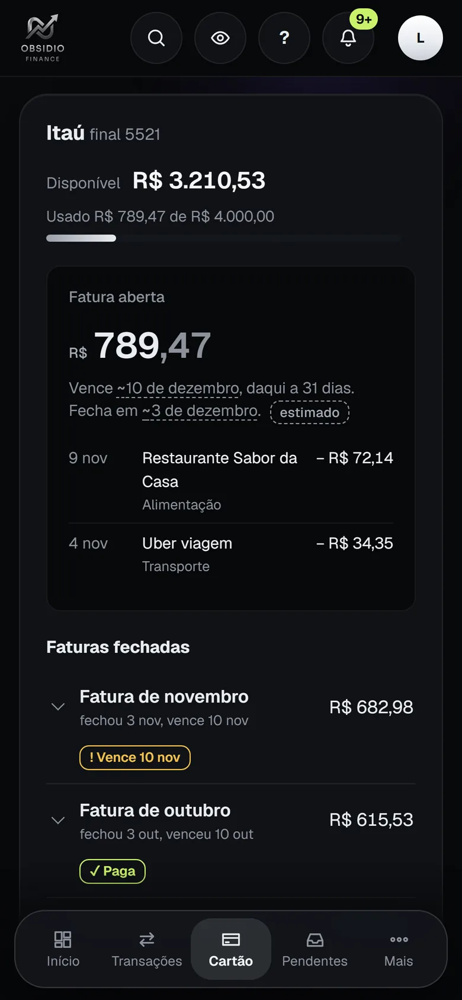
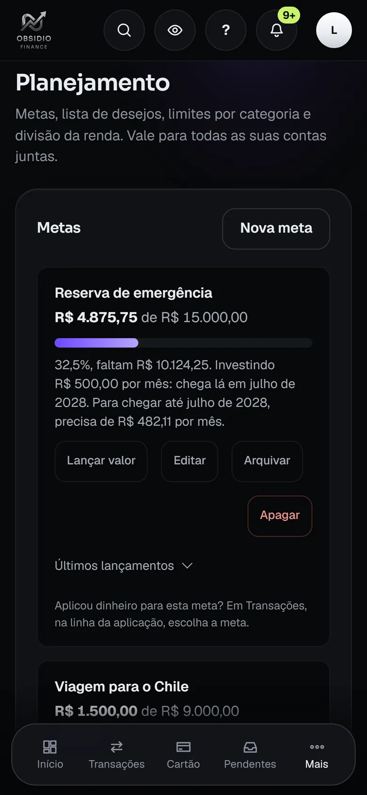
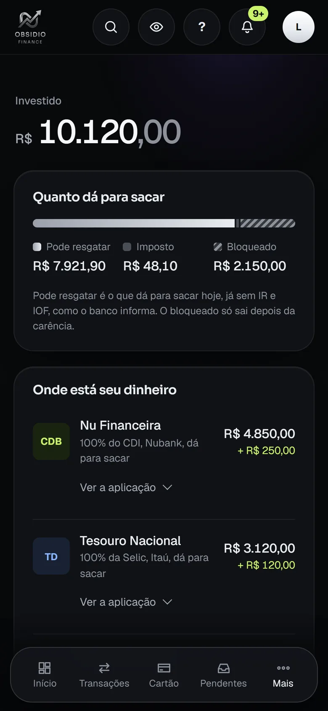

Um banco de dados por pessoa
Cada pessoa tem um Durable Object com o próprio SQLite. Não existe tabela compartilhada em que um filtro esquecido mostre o dado de outra pessoa.
App de finanças pessoais que conecta as contas bancárias por Open Finance, separa cada gasto por categoria e avisa antes de o mês apertar. Está no ar desde outubro de 2026, em uso real por mim e por pessoas que convidei.
Criei o Obsidio enquanto estudo Análise e Desenvolvimento de Sistemas na Unisinos. Esta página explica como ele funciona.


A tela inicial responde uma pergunta: quanto ainda dá para gastar até o fim do mês, já contando cartão, contas fixas e metas. As outras telas sustentam essa resposta.
Todas as imagens são do app de verdade, com o Lucas, um usuário inventado para demonstração. Nenhum dado real aparece nesta página.





A mesma base de regras roda em dois lugares: no meu notebook, com Node e SQLite, e na nuvem, em Cloudflare Workers.
As telas são em React 19 com TypeScript e podem ser instaladas no celular.
Itaú, Nubank e outros. Liberam dado novo uma vez por dia.
Open Finance, com autorização da própria pessoa
Serviço que fala com os bancos. Cada pessoa usa as próprias chaves, guardadas cifradas.
A cada 12 horas para quem está usando, e na hora se o dado tiver mais de 6 horas quando o app abre
Confere o login do Google, o convite e a sessão assinada. Manda cada pessoa para o espaço dela.
SQLite próprio, com categorias, regras e metas.
Outro banco de dados, sem ligação com o primeiro.
E-mail, nome e foto. Não enxerga nada financeiro.
Uma por dia, cifradas, guardadas por 14 dias.
Só o que a tela pede. A resposta fica guardada até algo mudar
O mesmo app no celular e no computador.
Cada transação passa por quatro perguntas, sempre nesta ordem, e para na primeira que souber responder.
Uma categoria escolhida à mão nunca é sobrescrita pela próxima leitura dos bancos.
O que o banco manda
Resultado
Seis decisões técnicas e o motivo de cada uma.
Cada pessoa tem um Durable Object com o próprio SQLite. Não existe tabela compartilhada em que um filtro esquecido mostre o dado de outra pessoa.
O Obsidio nasceu no notebook, com Node e SQLite. Na ida para a nuvem, uma camada fina passou a simular o Express e o banco dentro do Worker. As mesmas rotas e regras rodam nos dois lugares.
O banco guarda só um resumo do PIN, com PBKDF2 e sal, e por cima um HMAC com uma chave que fica fora dele. Uma cópia do banco sozinha não permite testar os PINs possíveis. No quinto erro seguido, somando todos os aparelhos, o PIN cai e a pessoa sai.
A Cloudflare dá 5 milhões de linhas lidas por dia para o app inteiro. Por isso cada tela guarda a última resposta: a segunda abertura do Início caiu de umas 8 mil linhas para menos de 10. Cada pessoa tem um teto de 500 mil por dia, e uma conta com problema não derruba as outras.
São 271 testes automatizados, concentrados nas regras de dinheiro. Antes de cada publicação, um script sobe o sistema com dados temporários, abre cada tela duas vezes e bloqueia o envio se alguma falhar ou passar do orçamento de linhas. O banco evoluiu por 25 migrações versionadas, cada uma com caminho de volta.
A tela Consultora responde perguntas sobre o mês usando o Claude. Ela recebe totais e nomes de empresas, nunca nome de pessoa nem documento.
O app muda conforme é usado: foram 103 commits entre 16 de outubro e 8 de novembro de 2026. Estas são as melhorias que mais pesaram.
O Obsidio rodava só no meu notebook. Passou a funcionar online, com login do Google, convites e um banco de dados separado para cada pessoa. Foi o que permitiu outras pessoas usarem o app.
O app passou a ser instalável e a avisar sozinho sobre limite, meta e salário, mesmo fechado. O Início ganhou a previsão de como o mês vai terminar, ainda com tempo de mudar o rumo.
Cada tela passou a guardar a última resposta e só volta ao banco quando algo muda. Foi a mudança que tornou possível manter o app no plano grátis.
O valor por dia e a folga do mês passaram a sair da mesma conta: saldo de hoje, menos cartão, contas fixas e metas, mais o que ainda deve entrar. O Início também passou a abrir, com um toque, de onde veio a variação do patrimônio.
Cada pessoa ganhou uma cópia diária do próprio espaço, cifrada e guardada por 14 dias em um armazenamento separado.
Para quem paga uma cobrança inteira e recebe a parte dos outros por Pix. O app reconhece o Pix de cada pessoa, desconta do gasto sem contar como renda e mostra quem já pagou no mês.
O código do Obsidio foi escrito com o Claude Code. O que este projeto mostra é o que eu decidi, testei e corrigi.
Estou no começo da graduação e ainda tenho noções de JavaScript, SQL e Git. Este projeto é como estou aprendendo: para decidir o que aprovar, preciso entender o que foi feito. É isso que quero aprofundar em um estágio, principalmente em backend.